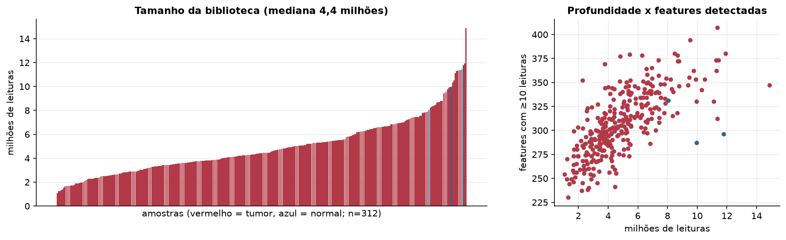
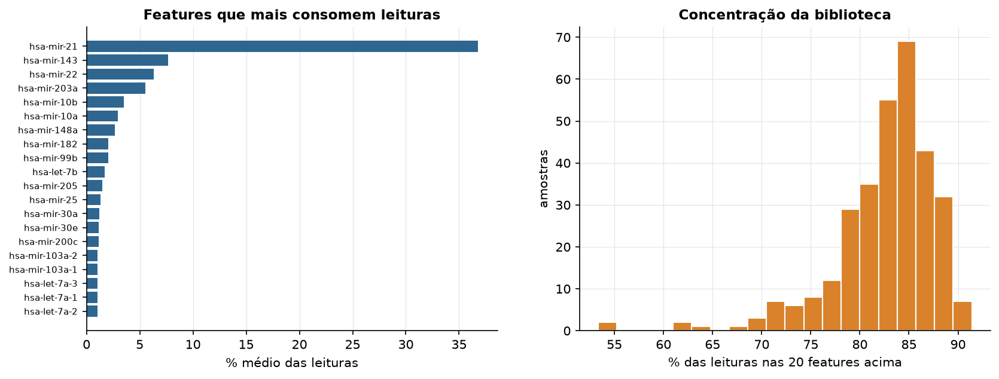
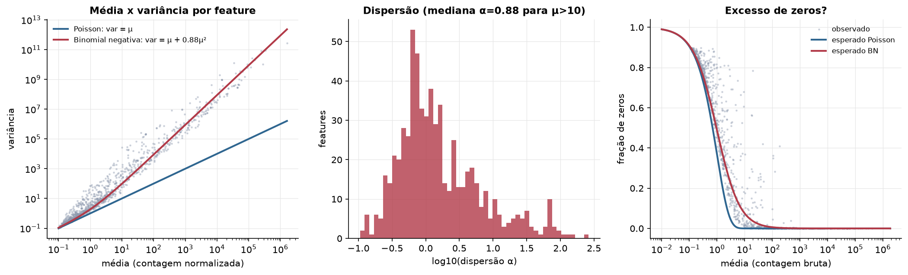
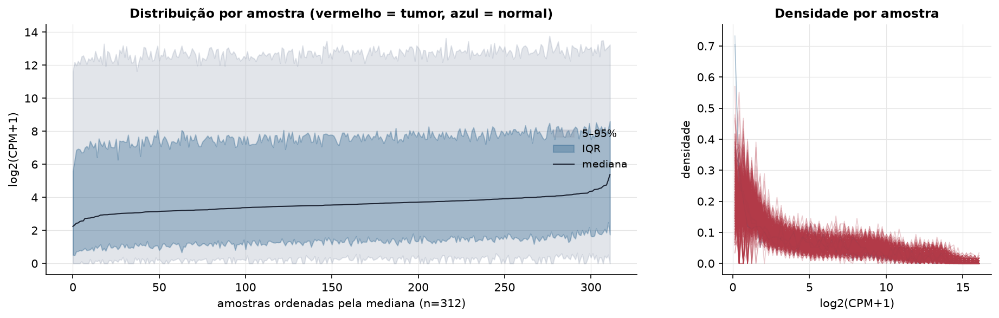
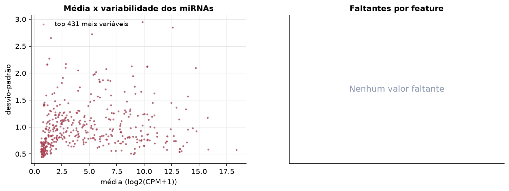
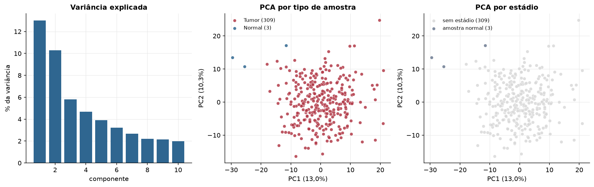
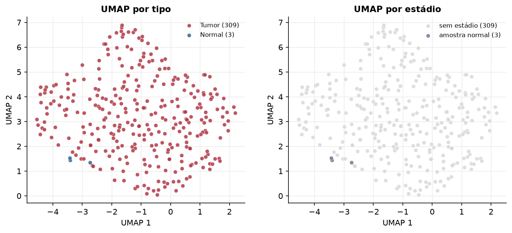
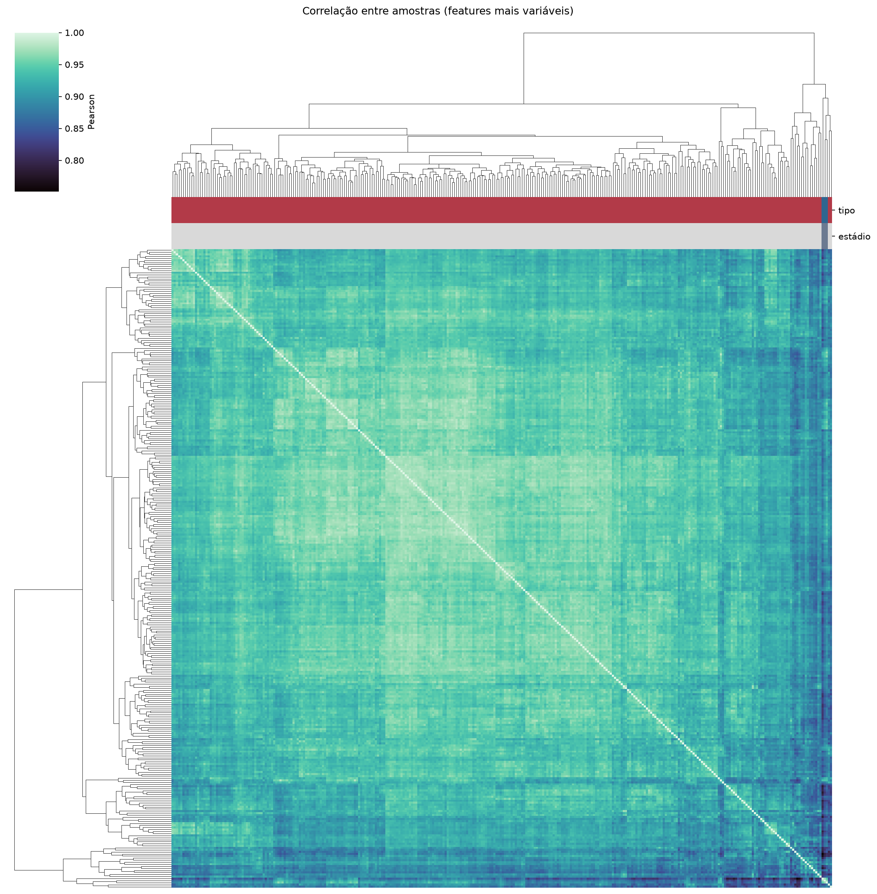
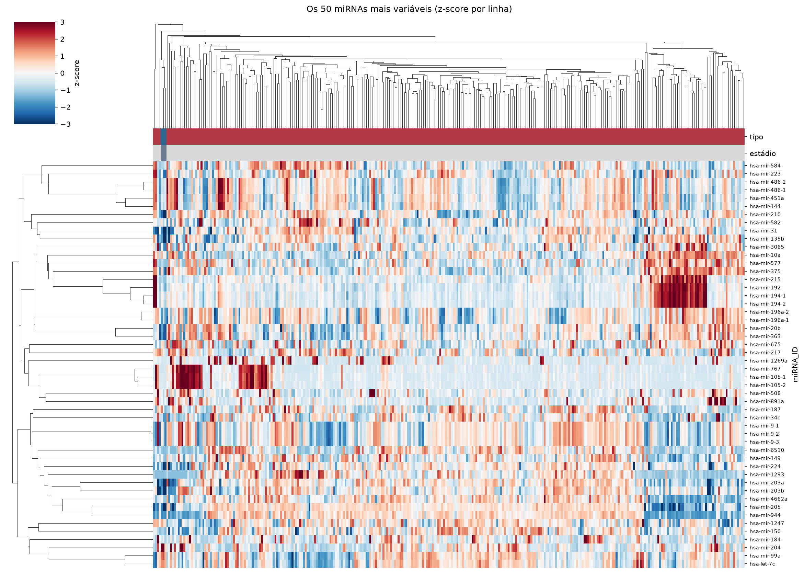
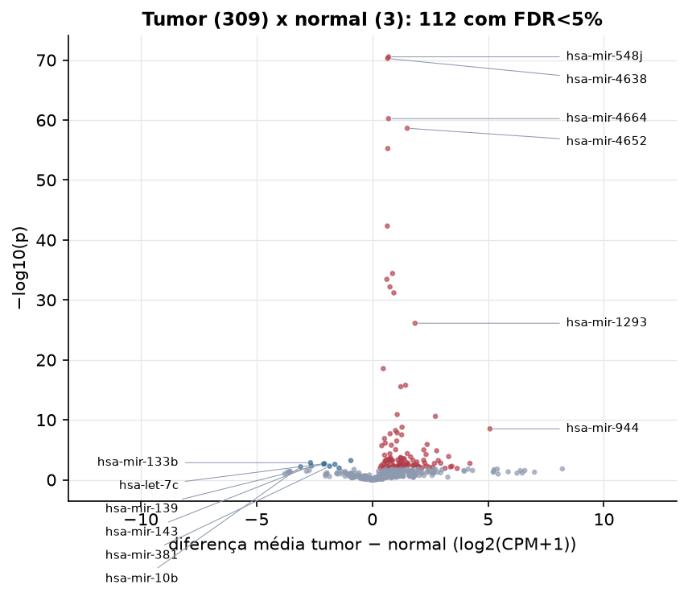

CESC · miRNA-seq: contagens brutas (GDC)
BCGSC miRNA Profiling (miRBase v21) · gerado em 21/10/2026 20:00
4,4 Mtamanho mediano
0,88dispersão mediana α
431miRNAs
309amostras tumorais
3amostras normais
0,0%valores faltantes
Fonte: API do GDC (BCGSC miRNA Profiling)
Principais resultados
- Bibliotecas de 1,1 a 14,9 milhões de leituras (mediana 4,4). 1.064 de 1.881 features têm leitura em pelo menos 10% das amostras.
- A variância cresce bem acima da média: a dispersão mediana da binomial negativa é α=0.88 (para features com média > 10). Isso descarta um modelo Poisson e indica binomial negativa (ou Poisson-lognormal) na verossimilhança.
- A fração de zeros é compatível com a binomial negativa (diferença mediana -3,6%); inflação de zeros não parece necessária.
- Em média 83,6% das leituras de cada amostra vão para as 20 features mais abundantes.
- 431 miRNAs medidos em 312 amostras (309 tumorais e 3 normais); 0,0% dos valores estão faltando.
- Os dois primeiros componentes principais explicam 13,0% e 10,3% da variância das features mais variáveis.
- Correlação mediana entre amostras: 0,94.
- Amostras com correlação muito abaixo das demais (possíveis outliers técnicos): TCGA-EK-A2R8-01, TCGA-FU-A3EO-11, TCGA-HM-A6W2-06, TCGA-HM-A3JJ-11, TCGA-JW-A5VH-01, TCGA-VS-A9UT-01.
- Tumor x normal: 112 miRNAs diferentes com FDR < 5% (103 maiores no tumor, 9 maiores no normal; 3 pacientes têm o par tumor-normal).
- Mais aumentados no tumor: hsa-mir-548j, hsa-mir-4638, hsa-mir-4664, hsa-mir-4652, hsa-mir-556, hsa-mir-4724, hsa-mir-551b, hsa-mir-1910.
- Mais reduzidos no tumor: hsa-mir-411, hsa-mir-133b, hsa-let-7c, hsa-mir-139, hsa-mir-195, hsa-mir-143, hsa-mir-381, hsa-mir-10b.
- Nenhum dos três primeiros componentes principais se associou a estádio, sexo, idade ou sobrevida com p < 0,05.
Biblioteca


Sobredispersão e zeros

Exploração em log2(CPM+1)
Features com CPM ≥ 1 em pelo menos 20% das amostras (431 features).
Distribuição dos valores


Estrutura das amostras




Tumor x normal

Features mais diferentes entre tumor e normal
| miRNA_ID | diferenca_tumor_menos_normal | t | p | fdr |
|---|---|---|---|---|
| hsa-mir-548j | 0.704 | 23.664 | 2.87e-71 | 1.17e-68 |
| hsa-mir-4638 | 0.66 | 23.588 | 5.42e-71 | 1.17e-68 |
| hsa-mir-4664 | 0.698 | 20.885 | 5.89e-61 | 8.46e-59 |
| hsa-mir-4652 | 1.506 | 20.46 | 2.36e-59 | 2.54e-57 |
| hsa-mir-556 | 0.667 | 19.568 | 5.61e-56 | 4.84e-54 |
| hsa-mir-4724 | 0.647 | 16.179 | 4.83e-43 | 3.47e-41 |
| hsa-mir-551b | 0.874 | 15.258 | 3.9e-35 | 2.4e-33 |
| hsa-mir-1910 | 0.625 | 13.827 | 3.7e-34 | 1.99e-32 |
| hsa-mir-7-2 | 0.761 | 17.853 | 6.72e-33 | 3.22e-31 |
| hsa-mir-323b | 0.928 | 16.284 | 6.63e-32 | 2.86e-30 |
| hsa-mir-1293 | 1.845 | 19.922 | 7.79e-27 | 3.05e-25 |
| hsa-mir-6718 | 0.472 | 12.86 | 2.85e-19 | 1.02e-17 |
| hsa-mir-1269a | 1.433 | 9.099 | 1.68e-16 | 5.58e-15 |
| hsa-mir-3200 | 1.228 | 16.348 | 2.98e-16 | 9.19e-15 |
| hsa-mir-105-1 | 1.073 | 8.005 | 1.31e-11 | 3.75e-10 |
| hsa-mir-6510 | 2.724 | 17.62 | 2.64e-11 | 7.1e-10 |
| hsa-mir-767 | 1.282 | 8.551 | 1.68e-09 | 4.26e-08 |
| hsa-mir-944 | 5.081 | 23.972 | 3.17e-09 | 7.59e-08 |
| hsa-mir-1180 | 1 | 12.978 | 5.96e-09 | 1.35e-07 |
| hsa-mir-744 | 1.07 | 15.632 | 1.48e-08 | 3.19e-07 |
| hsa-mir-509-2 | 0.767 | 8.136 | 2.07e-08 | 4.24e-07 |
| hsa-mir-147b | 1.266 | 16.583 | 3.14e-08 | 6.15e-07 |
| hsa-mir-5699 | 0.525 | 12.805 | 1.31e-07 | 2.45e-06 |
| hsa-mir-7702 | 1.051 | 12.692 | 3.41e-07 | 6.12e-06 |
| hsa-mir-509-1 | 0.557 | 6.072 | 7.48e-07 | 1.29e-05 |
| hsa-mir-33b | 2.365 | 23.633 | 1.28e-06 | 2.12e-05 |
| hsa-mir-3652 | 0.823 | 13.896 | 1.7e-06 | 2.72e-05 |
| hsa-mir-378c | 0.406 | 6.117 | 2.04e-06 | 3.14e-05 |
| hsa-mir-105-2 | 1.007 | 6.537 | 9.38e-06 | 0.000139 |
| hsa-mir-95 | 2.223 | 19.966 | 1.03e-05 | 0.000147 |
Associação com variáveis clínicas
p-valores da associação dos três primeiros componentes principais (só tumores) com estádio (Kruskal-Wallis), sexo (Mann-Whitney), idade (Spearman) e sobrevida global (Cox univariado).
| estádio (Kruskal) | sexo (Mann-Whitney) | idade (Spearman) | sobrevida OS (Cox) | |
|---|---|---|---|---|
| PC1 (12,4%) | 0.707 | 0.142 | ||
| PC2 (10,0%) | 0.307 | 0.567 | ||
| PC3 (5,9%) | 0.58 | 0.874 |